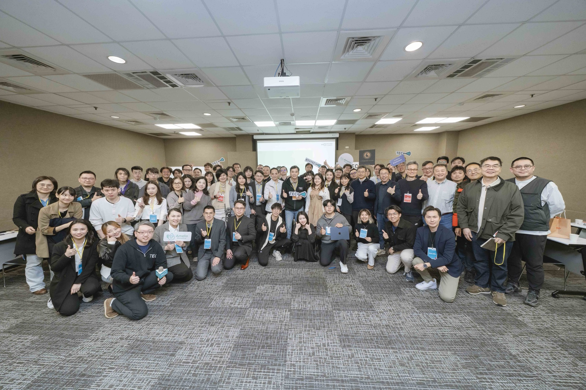
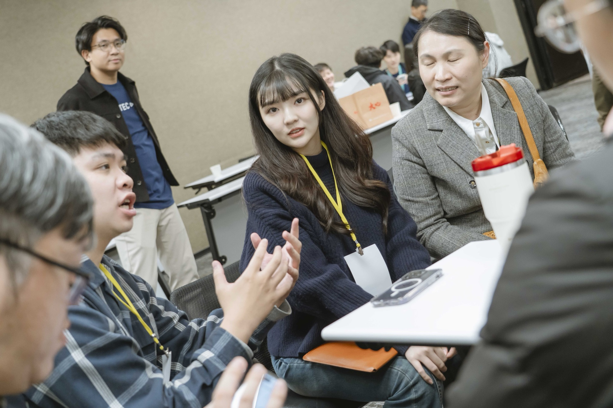
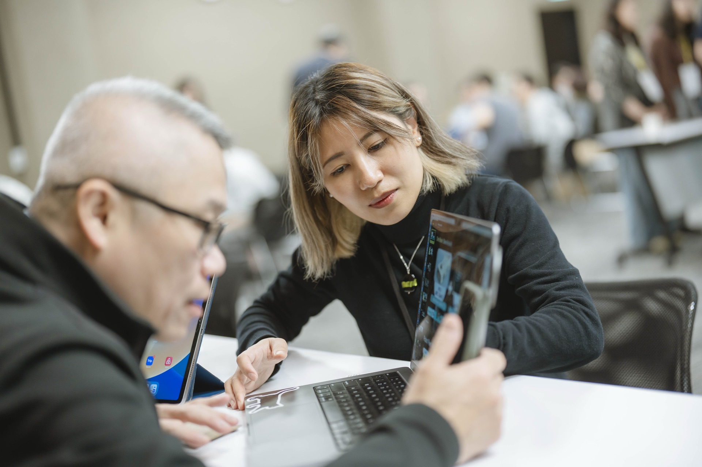

<!DOCTYPE html>
<html lang="zh-TW">
<head>
  <meta charset="UTF-8">
  <meta name="viewport" content="width=device-width, initial-scale=1.0">
  <title>關於台大創創中心 About NTUTEC — 台大創創中心 NTUTEC</title>
  <link rel="preconnect" href="https://fonts.googleapis.com">
  <link rel="preconnect" href="https://fonts.gstatic.com" crossorigin>
  <link href="https://fonts.googleapis.com/css2?family=Noto+Sans+TC:wght@300;400;500;600;700&family=Lato:wght@100;300;400;700;900" rel="stylesheet">
  <script src="https://unpkg.com/react@18.3.1/umd/react.development.js" integrity="sha384-hD6/rw4ppMLGNu3tX5cjIb+uRZ7UkRJ6BPkLpg4hAu/6onKUg4lLsHAs9EBPT82L" crossorigin="anonymous"></script>
  <script src="https://unpkg.com/react-dom@18.3.1/umd/react-dom.development.js" integrity="sha384-u6aeetuaXnQ38mYT8rp6sbXaQe3NL9t+IBXmnYxwkUI2Hw4bsp2Wvmx4yRQF1uAm" crossorigin="anonymous"></script>
  <script src="https://unpkg.com/lucide-react@0.474.0/dist/umd/lucide-react.js" crossorigin="anonymous"></script>
  <script src="https://unpkg.com/@babel/standalone@7.29.0/babel.min.js" integrity="sha384-m08KidiNqLdpJqLq95G/LEi8Qvjl/xUYll3QILypMoQ65QorJ9Lvtp2RXYGBFj1y" crossorigin="anonymous"></script>
  <style>
    *, *::before, *::after { box-sizing: border-box; margin: 0; padding: 0; }
    :root {
      --navy: #1A2E4A; --teal: #58A8A0; --mint: #00D8C8;
      --white: #FAFAF8; --offwhite: #F7F5F1; --rule: #E0E0DC;
      --text: #1A1A18; --muted: #6C727B;
      --serif: 'Noto Sans TC', sans-serif; --mono: 'Lato', sans-serif; --sans: 'Lato', 'Noto Sans TC', sans-serif;
      --italic: 'Cormorant Garamond', Georgia, serif;
    }
    html { scroll-behavior: smooth; overflow-x: hidden; max-width: 100vw; }
    body { font-family: var(--sans); background: var(--offwhite); color: var(--text); overflow-x: hidden; max-width: 100vw; }
    a { color: inherit; text-decoration: none; }
    ::selection { background: var(--mint); color: var(--navy); }
    .sec-en { font-family: var(--mono); font-size: 11px; font-weight: 500; letter-spacing: 0.14em; color: var(--teal); text-transform: uppercase; display: block; margin-bottom: 12px; }
    .sec-title-hl { font-family: var(--serif); font-weight: 600; line-height: 1.4; color: var(--navy); display: inline; background: var(--mint); box-decoration-break: clone; -webkit-box-decoration-break: clone; padding: 4px 10px; }
  </style>
</head>
<body>
<div id="root"></div>
<script type="text/babel" src="shared.js?v=2"></script>
<script type="text/babel">
const { useState, useEffect, useRef } = React;

function useInView(opts = {}) {
  const ref = useRef(null);
  const [v, setV] = useState(false);
  useEffect(() => {
    const obs = new IntersectionObserver(([e]) => { if (e.isIntersecting) { setV(true); obs.disconnect(); } }, { threshold: opts.threshold || 0.12 });
    if (ref.current) obs.observe(ref.current);
    return () => obs.disconnect();
  }, []);
  return [ref, v];
}

function AnimUp({ children, delay = 0, style = {} }) {
  const [ref, v] = useInView();
  return <div ref={ref} style={{ opacity: v ? 1 : 0, transform: v ? 'none' : 'translateY(28px)', transition: `opacity 0.7s cubic-bezier(0.22,1,0.36,1) ${delay}ms, transform 0.7s cubic-bezier(0.22,1,0.36,1) ${delay}ms`, ...style }}>{children}</div>;
}

const HI3 = [
  { key: 'H — Incubation', title: '輔導培育', description: '透過輔導經理陪跑、業師一對一諮詢、專業課程（商業模式、募資、法務），陪伴早期創業團隊從構想走到原型驗證。' },
  { key: 'I — Integration', title: '對接整合', description: '銜接台大各院系資源、企業垂直加速器、EiMBA 創業學程，連結政府計畫（FITI、TTA）與國際夥伴，讓新創快速接軌真實場域。' },
  { key: 'I — Ignition', title: '加速起飛', description: '舉辦 Demo Day（74 位投資人到場，2025）、閉門投資媒合、台大天使會，為準備好的團隊引燃第一桶資本，走向市場起飛。' },
];

const ALUMNI_HIGHLIGHTS = [
  { name: '配客嘉 PackAge+', tag: '循環包裝 × ESG', result: 'Pre-A NT$5,200 萬', detail: '獲國發基金、中信、彰銀入股，合作 200+ 企業，持續拓展東南亞市場。', img: 'images/events/demo-day-2025-04.jpg' },
  { name: '艾斯創生醫 Astron Medtech', tag: '醫療器材 × 國際', result: '募資 USD 250 萬（2024）', detail: 'SelectUSA MedTech 冠軍，NBA 球隊指定名醫等國際骨科權威投資。', img: 'images/events/opening-2026-04.jpg' },
  { name: 'Botbonnie', tag: '聊天機器人 × AI', result: '被 Appier 收購（2023）', detail: '創辦人為台大創創歷屆校友。最終被 Appier（東京上市的 AI 公司）收購。', img: 'images/events/demo-day-2025-05.jpg' },
];

const MILESTONES = [
  { year: '2013', title: '台大車庫（NTU Garage）啟動', description: '於台大水源校區設立 NTU Garage，作為學生創業共享空間，開啟台大創業生態系的基礎建設。' },
  { year: '2014', title: '台大創創中心正式成立', description: '由臺灣大學以校級單位正式設立創創中心，整合校內創業資源，推動校園創新創業生態系。' },
  { year: '2017', title: '台大加速器啟動', description: '推出台大加速器，為已有原型的新創團隊提供市場驗證、商業模式迭代與募資對接資源。' },
  { year: '2019', title: '企業垂直加速器首創', description: '首創企業垂直加速器，由企業出題、新創解題，累計與 35 家國內外企業深度合作。' },
  { year: '2022', title: 'Demo Day 啟動 & 台大天使會', description: '年度 Demo Day 正式啟動；2023 年台大天使會成立，彙聚 40+ 位天使會員共同投資早期新創。' },
  { year: '2026', title: '四大聚焦領域', description: '聚焦 AI 軟體、生技醫療、硬科技與創新商模四大領域，攜手台大創業生態系夥伴深化具有技術壁壘的新創育成。' },
];

const STATS = [
  { num: '600+', label: '輔導新創團隊', sub: '2013 年至今' },
  { num: '13', label: '年深耕', sub: 'Since 2013' },
  { num: '35+', label: '企業夥伴', sub: '垂直加速器合作' },
  { num: '150+', label: '投資人網絡', sub: '含 40+ 天使會員' },
];

function Hero() {
  const [loaded, setLoaded] = useState(false);
  const isMobile = useIsMobile();
  useEffect(() => { const t = setTimeout(() => setLoaded(true), 80); return () => clearTimeout(t); }, []);

  return (
    <div style={{ position: 'relative' }}>
      <section style={{ position: 'relative', overflow: 'hidden', minHeight: isMobile ? 480 : 720 }}>
        <div style={{ position: 'absolute', inset: 0, background: 'var(--navy)' }} />
        
        <div style={{ position: 'absolute', inset: 0, background: 'linear-gradient(135deg, rgba(26,46,74,0.95) 0%, rgba(26,46,74,0.75) 60%, rgba(26,74,90,0.6) 100%)' }} />
        <svg style={{ position: 'absolute', inset: 0, width: '100%', height: '100%', pointerEvents: 'none', zIndex: 3 }} viewBox="0 0 1200 720" preserveAspectRatio="none">
          <polygon points="0,0 324,0 0,160" fill="#F7F5F1" />
          <polygon points="1200,720 876,720 1200,560" fill="#F7F5F1" />
        </svg>
        <div style={{ position: 'relative', zIndex: 2, maxWidth: 1280, margin: '0 auto', padding: isMobile ? '120px 6% 80px' : '200px 10% 140px' }}>
          <div style={{ opacity: loaded ? 1 : 0, transform: loaded ? 'none' : 'translateY(20px)', transition: 'opacity 0.65s 0.1s, transform 0.65s 0.1s', fontFamily: 'var(--mono)', fontSize: 11, fontWeight: 500, letterSpacing: '0.18em', color: 'var(--mint)', textTransform: 'uppercase', marginBottom: 24 }}>About NTUTEC · Since 2013</div>
          <h1 style={{ opacity: loaded ? 1 : 0, transform: loaded ? 'none' : 'translateY(24px)', transition: 'opacity 0.65s 0.2s, transform 0.65s 0.2s', fontFamily: 'var(--sans)', fontSize: isMobile ? 36 : 58, fontWeight: 600, lineHeight: 1.12, color: '#fff', letterSpacing: '0.04em', marginBottom: 28 }}>台大創創中心<br />的故事</h1>
          <p style={{ opacity: loaded ? 1 : 0, transform: loaded ? 'none' : 'translateY(20px)', transition: 'opacity 0.65s 0.3s, transform 0.65s 0.3s', fontFamily: 'var(--serif)', fontSize: isMobile ? 15 : 16, fontWeight: 300, lineHeight: 2.05, color: 'rgba(255,255,255,0.84)', maxWidth: 560 }}>13 年 · 600+ 新創 · 35 家企業夥伴 · 150+ 投資人網絡——台大創業生態系的完整版圖。</p>
        </div>
      </section>
      {/* Stats card */}
      <div style={{ position: isMobile ? 'static' : 'absolute', bottom: 0, left: isMobile ? undefined : '10%', zIndex: 10, marginTop: isMobile ? 0 : undefined }}>
        <div style={{ background: '#fff', boxShadow: '0 12px 56px -8px rgba(26,46,74,0.18)', display: 'flex', flexWrap: isMobile ? 'wrap' : 'nowrap', opacity: loaded ? 1 : 0, transition: 'opacity 0.7s 0.6s' }}>
          {STATS.map((s, i) => (
            <React.Fragment key={i}>
              {i > 0 && !isMobile && <div style={{ width: 1, background: 'var(--rule)', alignSelf: 'stretch' }} />}
              <div style={{ padding: isMobile ? '20px 24px' : '24px 36px', flex: isMobile ? '1 1 45%' : 'none', borderBottom: isMobile && i < STATS.length - 1 ? '1px solid var(--rule)' : 'none', borderRight: isMobile && i % 2 === 0 ? '1px solid var(--rule)' : 'none' }}>
                <div style={{ fontFamily: 'var(--italic)', fontStyle: 'italic', fontWeight: 600, fontSize: isMobile ? 28 : 36, lineHeight: 1, color: 'var(--navy)', marginBottom: 6 }}>{s.num}</div>
                <div style={{ fontFamily: 'var(--sans)', fontSize: 12, color: 'var(--muted)', marginBottom: 2 }}>{s.label}</div>
                <div style={{ fontFamily: 'var(--mono)', fontSize: 10, color: 'var(--teal)' }}>{s.sub}</div>
              </div>
            </React.Fragment>
          ))}
        </div>
      </div>
    </div>
  );
}

function Mission() {
  const isMobile = useIsMobile();
  return (
    <section style={{ padding: isMobile ? '72px 0' : '120px 0', background: '#fff' }}>
      <div style={{ maxWidth: 1280, margin: '0 auto', padding: isMobile ? '0 6%' : '0 10%' }}>
        <div style={{ display: 'grid', gridTemplateColumns: isMobile ? '1fr' : '1fr 1fr', gap: isMobile ? 48 : 80, alignItems: 'center' }}>
          <AnimUp>
            <span className="sec-en">Our Mission</span>
            <h2 style={{ display: 'inline-block', marginBottom: 32 }}>
              <span className="sec-title-hl" style={{ fontSize: isMobile ? 28 : 36 }}>使命與願景</span>
            </h2>
            <p style={{ fontFamily: 'var(--serif)', fontSize: 16, fontWeight: 300, lineHeight: 2.05, color: 'var(--muted)', marginBottom: 24 }}>台大創創中心是台大創業生態系的實戰基地，以「連結台大、連結產業、連結資本」三個連結為核心，將台大最好的技術能量與人才，轉化為可投資的新創公司。</p>
            <p style={{ fontFamily: 'var(--serif)', fontSize: 16, fontWeight: 300, lineHeight: 2.05, color: 'var(--muted)', marginBottom: 24 }}>13 年來，我們累計輔導逾 600+ 支新創團隊，支持新創從技術驗證走入市場。</p>
            <p style={{ fontFamily: 'var(--serif)', fontSize: 16, fontWeight: 300, lineHeight: 2.05, color: 'var(--muted)' }}>我們的願景是成為臺灣創業生態圈受新創信賴的校園創業加速器，以 HI3 模型系統性支持新創。</p>
          </AnimUp>
          <AnimUp delay={120}>
            <div style={{ height: isMobile ? 260 : 420, overflow: 'hidden', borderRadius: 4 }}>
              
            </div>
          </AnimUp>
        </div>
      </div>
    </section>
  );
}

function Hi3Model() {
  const isMobile = useIsMobile();
  return (
    <section style={{ padding: isMobile ? '72px 0' : '120px 0', background: 'var(--offwhite)' }}>
      <div style={{ maxWidth: 1280, margin: '0 auto', padding: isMobile ? '0 6%' : '0 10%' }}>
        <AnimUp style={{ marginBottom: isMobile ? 36 : 56, textAlign: isMobile ? 'left' : 'right' }}>
          <span className="sec-en" style={{ justifyContent: isMobile ? 'flex-start' : 'flex-end', display: 'flex' }}>Our Approach</span>
          <h2 style={{ display: 'inline-block' }}>
            <span className="sec-title-hl" style={{ fontSize: isMobile ? 28 : 36 }}>HI3 培育模型</span>
          </h2>
          <p style={{ fontFamily: 'var(--serif)', fontSize: 15, fontWeight: 300, lineHeight: 1.9, color: 'var(--muted)', marginTop: 20, maxWidth: 400, marginLeft: 'auto' }}>以人為本（Human-centric），透過三階段系統性支持，陪伴新創從構想走向市場起飛。</p>
        </AnimUp>
        <div style={{ display: 'flex', flexDirection: 'column', gap: 0 }}>
          {HI3.map((item, i) => (
            <AnimUp key={i} delay={i * 80}>
              <div style={{ display: 'grid', gridTemplateColumns: isMobile ? '1fr' : '1fr 2fr', gap: 32, padding: '40px 0', borderTop: '1px solid var(--rule)' }}>
                <div>
                  <p style={{ fontFamily: 'var(--mono)', fontSize: 10, fontWeight: 500, letterSpacing: '0.16em', color: 'var(--teal)', textTransform: 'uppercase', marginBottom: 12 }}>{item.key}</p>
                  <h3 style={{ fontFamily: 'var(--serif)', fontSize: 22, fontWeight: 600, color: 'var(--navy)' }}>{item.title}</h3>
                </div>
                <p style={{ fontFamily: 'var(--serif)', fontSize: 15, fontWeight: 300, lineHeight: 1.95, color: 'var(--muted)', paddingTop: isMobile ? 0 : 8 }}>{item.description}</p>
              </div>
            </AnimUp>
          ))}
          <div style={{ borderTop: '1px solid var(--rule)' }} />
        </div>
      </div>
    </section>
  );
}

function AlumniHighlights() {
  const isMobile = useIsMobile();
  return (
    <section style={{ padding: isMobile ? '72px 0' : '120px 0', background: '#fff' }}>
      <div style={{ maxWidth: 1280, margin: '0 auto', padding: isMobile ? '0 6%' : '0 10%' }}>
        <AnimUp style={{ marginBottom: isMobile ? 36 : 56 }}>
          <span className="sec-en">Alumni Impact</span>
          <h2 style={{ display: 'inline-block' }}>
            <span className="sec-title-hl" style={{ fontSize: isMobile ? 28 : 36 }}>校友成功案例</span>
          </h2>
          <p style={{ fontFamily: 'var(--serif)', fontSize: 15, fontWeight: 300, lineHeight: 1.9, color: 'var(--muted)', marginTop: 20, maxWidth: 500 }}>從台大車庫與加速器起步，這些團隊已完成募資、收購或國際市場驗證。</p>
        </AnimUp>
        <div style={{ display: 'grid', gridTemplateColumns: isMobile ? '1fr' : 'repeat(3, 1fr)', gap: 24 }}>
          {ALUMNI_HIGHLIGHTS.map((a, i) => (
            <AnimUp key={i} delay={i * 80}>
              <div style={{ background: 'var(--offwhite)', borderRadius: 4, overflow: 'hidden' }}>
                <div style={{ height: 200, overflow: 'hidden' }}>
                  
                </div>
                <div style={{ padding: '28px 28px' }}>
                  <span style={{ display: 'inline-block', background: 'rgba(88,168,160,0.12)', color: 'var(--teal)', fontFamily: 'var(--sans)', fontSize: 12, fontWeight: 500, padding: '3px 12px', borderRadius: 12, marginBottom: 16 }}>{a.tag}</span>
                  <h3 style={{ fontFamily: 'var(--serif)', fontSize: 18, fontWeight: 600, color: 'var(--navy)', marginBottom: 8 }}>{a.name}</h3>
                  <p style={{ fontFamily: 'var(--sans)', fontSize: 20, fontWeight: 600, color: 'var(--teal)', marginBottom: 12 }}>{a.result}</p>
                  <p style={{ fontFamily: 'var(--serif)', fontSize: 14, fontWeight: 300, lineHeight: 1.8, color: 'var(--muted)' }}>{a.detail}</p>
                </div>
              </div>
            </AnimUp>
          ))}
        </div>
        <div style={{ marginTop: 40, textAlign: 'left' }}>
          <a href="alumni.html" style={{ display: 'inline-flex', alignItems: 'center', gap: 8, fontFamily: 'var(--serif)', fontSize: 15, color: 'var(--teal)', borderBottom: '1px solid var(--teal)', paddingBottom: 4 }}>查看所有校友 →</a>
        </div>
      </div>
    </section>
  );
}

function Timeline() {
  const isMobile = useIsMobile();
  return (
    <section style={{ padding: isMobile ? '72px 0' : '120px 0', background: 'var(--navy)' }}>
      <div style={{ maxWidth: 1280, margin: '0 auto', padding: isMobile ? '0 6%' : '0 10%' }}>
        <AnimUp style={{ marginBottom: isMobile ? 48 : 72, textAlign: 'center' }}>
          <span className="sec-en" style={{ color: 'rgba(255,255,255,0.5)', justifyContent: 'center', display: 'flex' }}>History</span>
          <h2 style={{ display: 'inline-block' }}>
            <span style={{ fontFamily: 'var(--serif)', fontWeight: 600, lineHeight: 1.4, color: '#fff', display: 'inline', background: 'var(--teal)', boxDecorationBreak: 'clone', WebkitBoxDecorationBreak: 'clone', padding: '4px 10px', fontSize: isMobile ? 28 : 36 }}>發展歷程</span>
          </h2>
        </AnimUp>
        <div style={{ position: 'relative' }}>
          {!isMobile && <div style={{ position: 'absolute', left: '50%', top: 0, bottom: 0, width: 1, background: 'rgba(255,255,255,0.12)', transform: 'translateX(-50%)' }} />}
          <div style={{ display: 'flex', flexDirection: 'column', gap: 40 }}>
            {MILESTONES.map((m, i) => (
              <AnimUp key={i} delay={i * 60}>
                <div style={{ display: 'flex', justifyContent: isMobile ? 'flex-start' : (i % 2 === 0 ? 'flex-end' : 'flex-start'), position: 'relative' }}>
                  {!isMobile && <div style={{ position: 'absolute', left: '50%', top: 8, width: 12, height: 12, borderRadius: '50%', background: 'var(--mint)', transform: 'translateX(-50%)', boxShadow: '0 0 0 4px rgba(0,216,200,0.2)' }} />}
                  <div style={{ width: isMobile ? '100%' : '44%', padding: '24px 28px', background: 'rgba(255,255,255,0.06)', borderRadius: 4, textAlign: isMobile ? 'left' : (i % 2 === 0 ? 'right' : 'left') }}>
                    <span style={{ fontFamily: 'var(--mono)', fontSize: 11, fontWeight: 500, letterSpacing: '0.16em', color: 'var(--mint)', marginBottom: 8, display: 'block' }}>{m.year}</span>
                    <h4 style={{ fontFamily: 'var(--serif)', fontSize: 16, fontWeight: 600, color: '#fff', marginBottom: 8 }}>{m.title}</h4>
                    <p style={{ fontFamily: 'var(--sans)', fontSize: 13, fontWeight: 300, lineHeight: 1.8, color: 'rgba(255,255,255,0.6)' }}>{m.description}</p>
                  </div>
                </div>
              </AnimUp>
            ))}
          </div>
        </div>
      </div>
    </section>
  );
}

function CTA() {
  const isMobile = useIsMobile();
  return (
    <section style={{ padding: isMobile ? '48px 6%' : '80px 10%', background: 'var(--offwhite)' }}>
      <div style={{ maxWidth: 1280, margin: '0 auto' }}>
        <AnimUp>
          <div style={{ background: 'var(--navy)', borderRadius: 4, padding: isMobile ? '48px 32px' : '72px 80px', display: 'flex', flexDirection: isMobile ? 'column' : 'row', alignItems: isMobile ? 'flex-start' : 'center', justifyContent: 'space-between', gap: 32, position: 'relative', overflow: 'hidden' }}>
            
            <div style={{ position: 'relative', zIndex: 1 }}>
              <span style={{ fontFamily: 'var(--mono)', fontSize: 11, fontWeight: 500, letterSpacing: '0.14em', color: 'var(--mint)', textTransform: 'uppercase', display: 'block', marginBottom: 16 }}>Start Your Journey</span>
              <h2 style={{ fontFamily: 'var(--serif)', fontSize: isMobile ? 26 : 34, fontWeight: 600, color: '#fff', lineHeight: 1.4, marginBottom: 16 }}>認識我們的團隊</h2>
              <p style={{ fontFamily: 'var(--sans)', fontSize: 15, fontWeight: 300, color: 'rgba(255,255,255,0.7)', lineHeight: 1.8, maxWidth: 480 }}>投資經理、輔導經理——每位成員都是新創的第一線戰友，不只給建議，更一起把關鍵路上每個節點走完。</p>
            </div>
            <div style={{ position: 'relative', zIndex: 1, display: 'flex', flexDirection: 'column', gap: 12, flexShrink: 0 }}>
              <a href="team.html" style={{ display: 'inline-block', background: 'var(--mint)', color: 'var(--navy)', fontFamily: 'var(--serif)', fontWeight: 600, fontSize: 15, padding: '14px 32px', borderRadius: 2, whiteSpace: 'nowrap', textAlign: 'center' }}>查看完整團隊</a>
              <a href="apply.html" style={{ display: 'inline-block', background: 'transparent', color: 'rgba(255,255,255,0.7)', fontFamily: 'var(--serif)', fontSize: 15, padding: '14px 32px', borderRadius: 2, whiteSpace: 'nowrap', textAlign: 'center', border: '1px solid rgba(255,255,255,0.2)' }}>啟動創業之旅</a>
            </div>
          </div>
        </AnimUp>
      </div>
    </section>
  );
}

function Page() {
  const isMobile = useIsMobile();
  return (
    <div style={{ maxWidth: '100vw', overflowX: 'hidden' }}>
      <SharedNav activeKey="關於我們" />
      <SharedSocialSidebar />
      <main style={{ paddingRight: isMobile ? 0 : 80 }}>
        <Hero />
        <Mission />
        <Hi3Model />
        <AlumniHighlights />
        <Timeline />
        <CTA />
      </main>
      <div style={{ paddingRight: isMobile ? 0 : 80 }}>
        <SharedFooter />
      </div>
    </div>
  );
}

ReactDOM.createRoot(document.getElementById('root')).render(<Page />);
</script>
</body>
</html>
